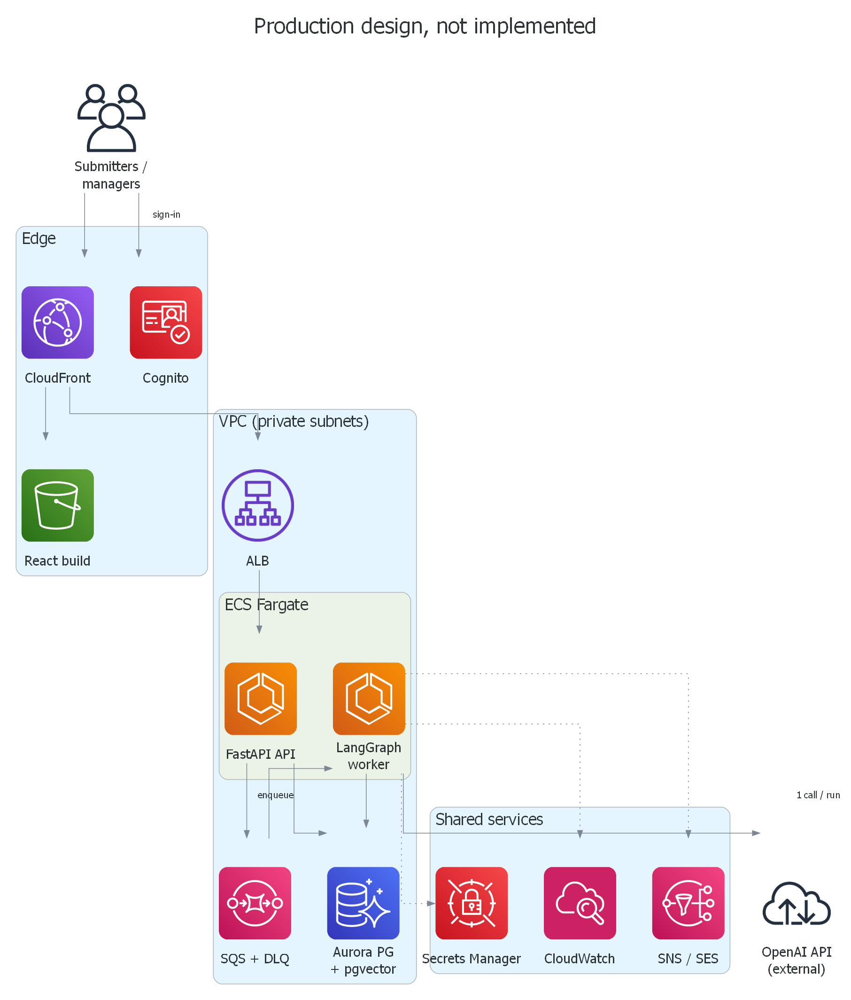
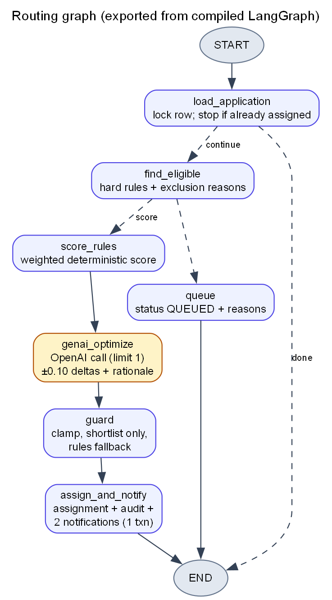
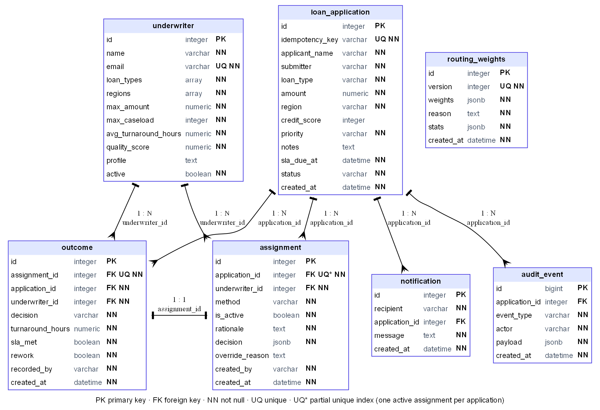

The app routes each new loan application to an underwriter and explains why. A rules engine filters and scores underwriters deterministically. One OpenAI call (gpt-4o-mini) may shift each of the top-3 scores by at most ±0.10 and writes the rationale, and code validates that output before anything is saved.
Working today, locally only: submission with duplicate protection, routing with live step and tool status, queueing when nobody is eligible, manager override with a required reason, outcome capture that adapts routing (per-underwriter stats plus versioned scoring weights), an audit trail, a dashboard, and an "ask why" agent. All of it has been exercised against a real local PostgreSQL 18 database and the live OpenAI API.
Not built: authentication, deployment (the AWS diagram is a design only), and embeddings/pgvector. Learning is heuristic (moving averages plus rate-based re-weighting), not a trained model.
Assumptions: single machine; local Postgres (an Aurora cluster was provided, but its endpoint did not resolve in DNS); 9 seeded underwriters, 1 of them on leave; 4 loan types and 4 regions; "notify" means a row in the notification table; no login, so names are typed by hand.
Out of scope / not built: authentication and roles, email or SMS delivery, document upload, a message queue (routing runs in an in-process thread), Alembic migrations (tables come from create_all, plus one idempotent ALTER at startup), Docker/CI/deployment, embeddings/pgvector, Elasticsearch/Milvus, and ML-trained routing.
| ID | Requirement | Status | Evidence in the code |
|---|---|---|---|
| FR1 | Submit a loan application | Done | POST /api/applications, validated by Pydantic |
| FR2 | Find eligible underwriters and record exclusion reasons | Done | rules.eligibility_reasons: active, loan type, region, amount, caseload |
| FR3 | Deterministic scoring and ranking | Done | rules.score (weights 0.3/0.3/0.2/0.2); ties broken by underwriter id |
| FR4 | GenAI refines the top 3 for fairness, SLA and fit, and writes a rationale | Done | genai_optimize and guard; skipped when only one candidate is eligible |
| FR5 | Assign the underwriter, notify, and show the rationale to the submitter | Done | Notifications are database rows only; nothing is emailed |
| FR6 | Queue when nobody is eligible; re-route on request | Done | queue node; manual POST /…/route; every completed case also re-routes all QUEUED applications |
| FR7 | Override with a required reason | Done | Reason of at least 10 characters, enforced by Pydantic and a database CHECK constraint |
| FR8 | Append-only audit trail | Partial | Events are written on every step, but nothing in the database prevents an UPDATE or DELETE |
| FR9 | Natural-language questions about a decision | Done | Tool-calling agent in ask.py with per-tool limits |
| FR10 | Dashboard of caseloads and recent assignments | Done | GET /api/dashboard and the Dashboard page |
| FR11 | Adaptive optimisation from outcomes | Done | POST /…/complete stores an outcome; learning.py updates the underwriter's quality and turnaround (EMA, α = 0.2) and, after at least 3 outcomes, writes a new routing_weights version that score_rules uses next |
| FR12 | Ask about learning ("why did the weights change?") | Done | get_learning tool (limit 1) in the ask agent |
| ID | Target | How it is met (and gaps) |
|---|---|---|
| NFR1 | No duplicate routings | Unique idempotency_key; partial unique index (one active assignment per application); SELECT … FOR UPDATE; the graph exits early if the application is already assigned. A live duplicate POST returned the same application id. |
| NFR2 | No missed routings | The application is committed before routing starts, and its status is visible (NEW, ROUTED or QUEUED). QUEUED applications are re-routed whenever a case completes, and on startup every NEW or QUEUED application is re-routed (recovery after a crash; verified live). Gap: no recovery until the process restarts. |
| NFR3 | Every routing is auditable | audit_event stores the full decision JSON: candidates, scores, AI output, exclusions and model name. |
| NFR4 | Explainable and fair | A rationale, a per-factor score breakdown, exclusion reasons, a fairness factor, the weights version used, and override reasons. The prompt requires names, and humanize_ids replaces any leftover "Underwriter 2" with the name. |
| NFR5 | Deterministic | The rules ranking is pure and unit-tested. The OpenAI call uses temperature=0 and seed=42, which makes it near-deterministic, though the API doesn't guarantee it. Its effect is bounded to ±0.10 and stored, so a decision can be audited without calling the LLM again. There is no replay endpoint. |
| NFR6 | Low latency: API under 500 ms; routing run under 10 s | Measured: API median ≈240 ms; routing 3.4–4.1 s with the LLM call. The OpenAI client has a 20 s timeout and 1 retry; on failure the rules winner is used. |
| NFR7 | Secrets kept out of code | Keys live only in backend/.env, which is git-ignored. The front-end reads only VITE_API_BASE_URL. |
| Quantity | Value | Basis |
|---|---|---|
| Requests per day | 2,000 applications × about 10 calls each (1 POST, about 4 polls, about 5 page loads) ≈ 20k requests/day, about 0.25 req/s on average and about 2.5 req/s at a 10× peak | Assumed volume |
| Latency per routing run | 3.4 s and 4.1 s (2 runs with an LLM call); 0.01 s when only one candidate is eligible | Measured, local, n = 2+1 |
| Latency per "ask" run | 2.2 s, 1 tool call | Measured, n = 1 |
| Model cost per routing run | 615 input + 213 output tokens ≈ $0.0002 per run, ≈ $0.44/day at 2,000 runs | Tokens measured; price assumed at gpt-4o-mini list rates ($0.15 / $0.60 per million tokens) |
| Storage | ≈ 4.5 KB per application across the routing tables (an outcome row adds about 0.1 KB, assumed) ≈ 9 MB/day ≈ 3.3 GB/year, before indexes | Decision JSON averages 1,424 B and audit payloads 865 B (measured); volume assumed |


genai_optimize calls the LLM.
outcome and routing_weights hold the learning data.| Chose | Alternative | Reason |
|---|---|---|
| Rules engine ranks; the LLM adjusts only the top 3 by ±0.10 | Let the LLM choose freely | Keeps routing deterministic and safe: the LLM can never pick an ineligible underwriter |
A guard node checks the LLM output |
Trust the JSON as returned | It clamps adjustments, drops unknown ids, uses the LLM rationale only if the LLM's pick won, and falls back to the rules winner |
Tool-call limits per run: graph state carries run_id; genai_optimize calls runs.tool_call() before OpenAI (limit 1); ask agent: get_decision 2, get_underwriter 3, get_audit_trail 2, get_learning 1, at most 4 turns |
No limits | Caps cost and runaway loops. The counters live in the run registry (runs.py) keyed by run_id, not in RouteState itself |
LangGraph StateGraph with 2 conditional edges |
Plain function chain | Explicit nodes give live per-step status and readable branching |
| Background thread plus polling (30 attempts, 1 s apart) | Synchronous request, or SQS | Fits the time box; the UI shows progress and a timeout with a retry button |
| Uniqueness enforced by the database | An application-level check only | Safe even when two requests race |
| Learning: EMA per underwriter plus versioned, rate-based weights (minimum 3 outcomes) | Train an ML ranking model | Explainable and auditable (each version stores its reason); works with very little data |
| Trade-off | Chose | What it costs | When I would switch |
|---|---|---|---|
| In-process thread vs SQS + worker | Thread | No retries, no backpressure, no dead-letter queue; a crash is recovered only at the next restart | Beyond about 5 req/s, or more than one API instance |
| In-memory run registry vs Postgres/Redis | In-memory | Progress is lost on restart; works only with a single process | As soon as there is more than one instance or a worker |
| Polling vs WebSockets/SSE | Polling (1 s, 30 attempts) | Up to 30 requests per run; about 1 s of delay in the UI | Many users watching runs at once |
| LLM reads profiles vs embeddings (pgvector) | LLM | Tokens on every run; less precise as history grows | When there are many past cases to search |
| Local Postgres vs Aurora | Local | No pgvector, not shared, not durable | When a working Aurora endpoint exists (the one provided does not resolve) |
| Heuristic learning vs ML-trained ranker | Heuristic | Coarse: only SLA-miss and rework rates move the weights | Once hundreds of labelled outcomes exist |
| gpt-4o-mini vs a larger model | gpt-4o-mini | Weaker judgement on subtle fit | If an evaluation set shows poor fit or poor rationales |
| Check | Command | Result |
|---|---|---|
| Backend unit tests (rules, guard, tool limit, learning maths, weights change ranking, name fix) | cd backend; .venv\Scripts\python -m pytest tests -q |
15 passed in 1.5 s |
| Front-end type check / lint | cd front-end; npm run typecheck; npm run lint |
0 errors, 0 warnings |
| Live checks (manual, against the API) | — | LLM routing (6 runs); single-candidate fallback; duplicate POST → same id; bad override → 422 + request_id; 3 outcomes → weights v1 (SLA 0.20→0.229, expertise 0.30→0.343) used by the next routing; completion re-routed a QUEUED app; double completion → 409 |
Run: first fill in backend/.env (DATABASE_URL, OPENAI_API_KEY), then cd backend; .venv\Scripts\python -m uvicorn app.main:app --port 8000 and cd front-end; npm run dev, and open http://localhost:5173. There are no automated integration, end-to-end, front-end or load tests.
| Limitation | Risk | Mitigation |
|---|---|---|
| No authentication or roles | Anyone can override an assignment | Cognito/JWT with manager and submitter roles |
| Runs held in memory; recovery only at startup | A NEW application can wait until the next restart | Persistent runs table, SQS worker and a periodic sweep |
| Audit trail is append-only only by convention | History could be edited | Revoke UPDATE/DELETE on the table, or add a hash chain |
Not deployed; tables created with create_all |
Schema drift between environments | Alembic migrations plus infrastructure-as-code for the AWS design |
| Learning uses small samples and simple rules | Noisy weight swings | Larger window, minimum-change threshold (0.005 already applied), offline evaluation |
P1: authentication and roles; persistent runs with an SQS worker and a re-route sweep; Alembic migrations. P2: embeddings in pgvector (Aurora); an evaluation set for rationales and fit; a learning dashboard with charts. P3: AWS deployment as code; SES/SNS delivery for notifications; load testing.
Base URL http://localhost:8000 (interactive docs at /docs). Errors return {detail, request_id}; 202 responses return a run_id to poll.
| Method | Path | Purpose | Request | Response |
|---|---|---|---|---|
| GET | /api/health |
Liveness check | — | {ok} |
| POST | /api/applications |
Submit an application and start routing (202) | applicant, submitter, loan_type, amount, region, credit_score, priority, notes, idempotency_key |
{application_id, run_id, duplicate, request_id} |
| GET | /api/runs/{run_id} |
Poll a routing or ask run | — | status, steps[], tools{calls, limit}, result, error |
| GET | /api/applications |
List applications | ?status= |
applications with the assigned underwriter |
| GET | /api/applications/{id} |
Application detail | — | application, assignment (scores, rationale, exclusions), outcome, history, audit, notifications |
| POST | /api/applications/{id}/route |
Re-route a NEW or QUEUED application (202) | — | {run_id}; 409 if already routed |
| POST | /api/applications/{id}/override |
Manager reassignment | underwriter_id, reason (≥ 10 chars), actor | new assignment and eligibility warnings |
| POST | /api/applications/{id}/ask |
Ask about the decision (202) | question | {run_id}; the answer arrives in the run result |
| POST | /api/applications/{id}/complete |
Record the outcome and learn from it | decision, turnaround_hours, rework, actor | outcome, learning (stats before/after, weights version), re-routed queued apps |
| GET | /api/learning |
Adaptive learning state | — | current weights and version, outcome stats, history |
| GET | /api/underwriters |
Underwriters with live load | — | load, capacity, quality, turnaround, completed |
| GET | /api/dashboard |
Dashboard data | — | caseloads, counts by status, recent assignments, learning |
| GET | /api/notifications |
Notifications | ?recipient= |
latest 50 notifications |